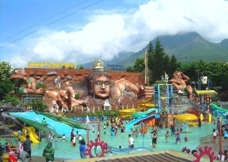
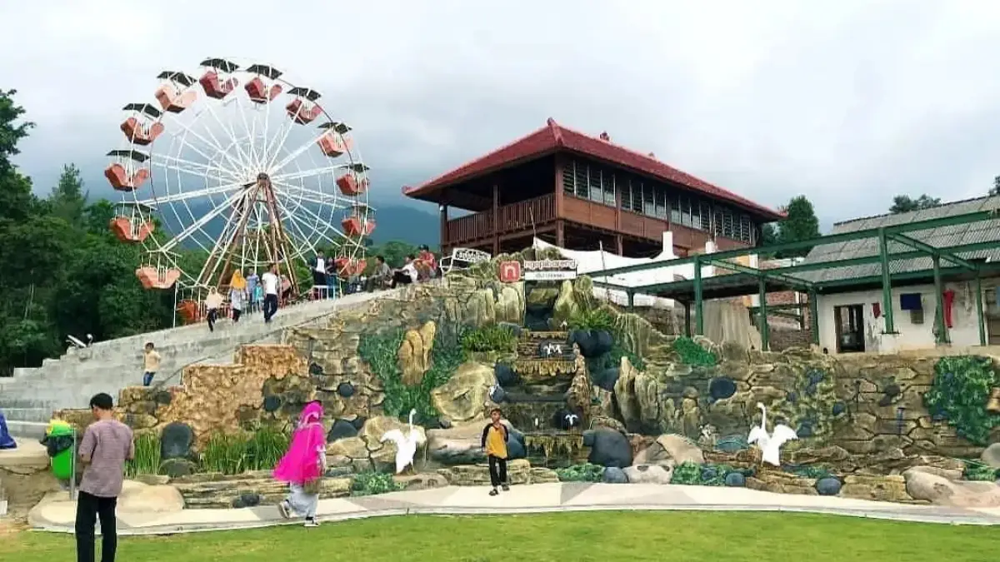
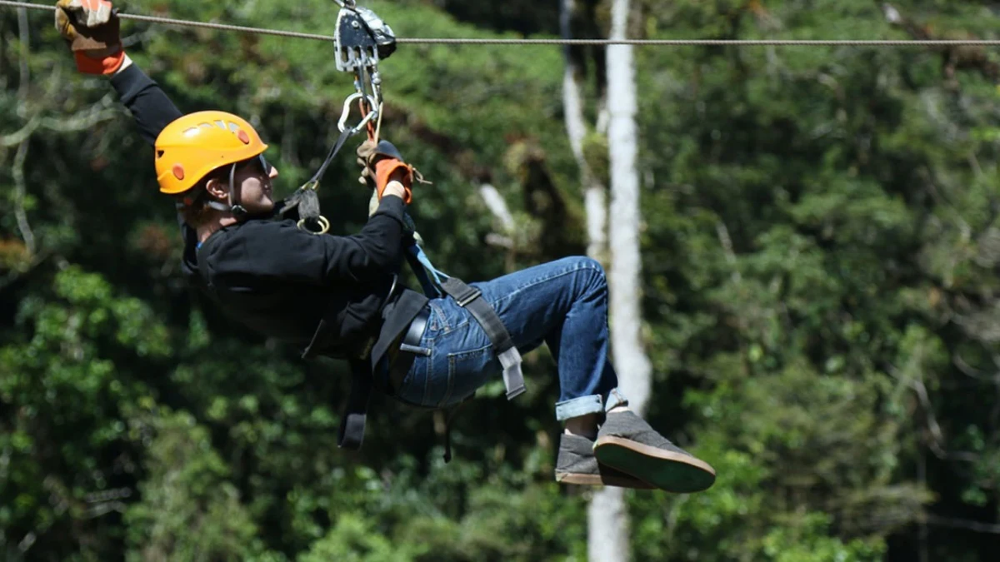

Destinasi Outbound Terbaik
Jelajahi lokasi-lokasi strategis kami di seluruh Jawa Timur
 Populer
Populer
Coban Rondo, Malang
Lokasi outbound dengan suasana hutan pinus yang sejuk dan air terjun yang indah. Cocok untuk berbagai kegiatan outbound dengan fasilitas lengkap dan akses mudah dari pusat kota Malang.
Fasilitas:
- Area Outbound
- Meeting Room
- Mushola
- Toilet
- Area Parkir
- Kantin
 Adventure
Adventure
Gunung Bromo
Pengalaman outbound yang tak terlupakan di kawasan Taman Nasional Bromo Tengger Semeru. Nikmati pemandangan sunrise yang spektakuler dan tantangan petualangan di ketinggian.
Fasilitas:
- Jeep Tour
- Guided Trek
- Camping Ground
- Homestay
- Rest Area
- Dokumentasi

FavoritBatu, Malang
Kota wisata dengan berbagai pilihan lokasi outbound yang menarik. Dari area pegunungan hingga taman rekreasi, Batu menawarkan pengalaman outbound yang beragam untuk semua usia.
Fasilitas:
- Multiple Venues
- Hotel & Resort
- Restoran
- Wisata Sekitar
- Transportasi
- Event Organizer

Udara SejukTretes, Pandaan
Kawasan pegunungan dengan udara sejuk dan pemandangan alam yang memukau. Lokasi ideal untuk team building dan gathering dengan suasana yang tenang dan nyaman.
Fasilitas:
- Villa & Cottage
- Kolam Renang
- Area BBQ
- Aula
- Area Bermain
- WiFi
 Trekking
Trekking
Ranu Kumbolo
Danau alami di kaki Gunung Semeru dengan pemandangan yang spektakuler. Perfect untuk kegiatan trekking, camping, dan survival training dengan tantangan yang sesungguhnya.
Fasilitas:
- Trekking Route
- Camping Area
- Pos Pendakian
- Guide Profesional
- Porter Service
- Emergency Kit

Akses MudahSurabaya & Sekitarnya
Untuk kemudahan akses, kami menyediakan berbagai lokasi outbound di Surabaya dan sekitarnya. Cocok untuk kegiatan half day atau full day tanpa perlu perjalanan jauh.
Fasilitas:
- Urban Outbound
- Beach Area
- Hotel Bintang
- Convention Hall
- Food Court
- Shopping Center